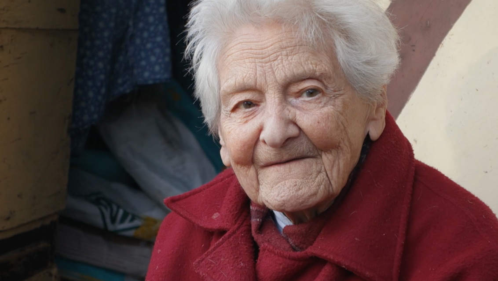

Bruissellement

Depuis plus de 40 ans, Mariette s’affaire dans un petit jardin bruxellois. Elle s’occupe des plantes et des animaux, en répétant inlassablement les mêmes gestes.
Je la découvre un peu par hasard et je me plais dans la douceur du jardin. Je reviens régulièrement rendre visite à Mariette.
+ more info
Film
Durée : 49′
Couleur
16:9
Stéréo
Vidéo HD
Français
Sous-titres anglais
Crédits
Réalisation, image : Ilaria Fantini
Montage : Lucrezia Lippi
Montage son : Samuel Ab
Mixage : Iannis Heaulme
Production : AJC! 23
Diffusions
Exposition « Interstices 1070 », Poelp, Anderlecht, Belgique — 2023
Festival international des films identitaires et solidaires, Nikki, Bénin — 2024
Do Pao International Documentary Film Festival, Albergaria-a-Velha, Portugal — 2025